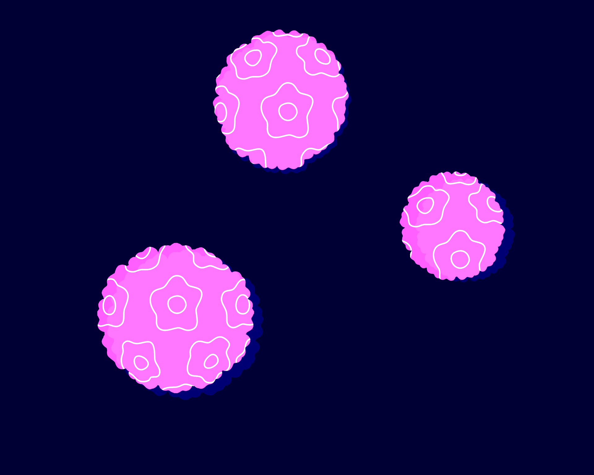
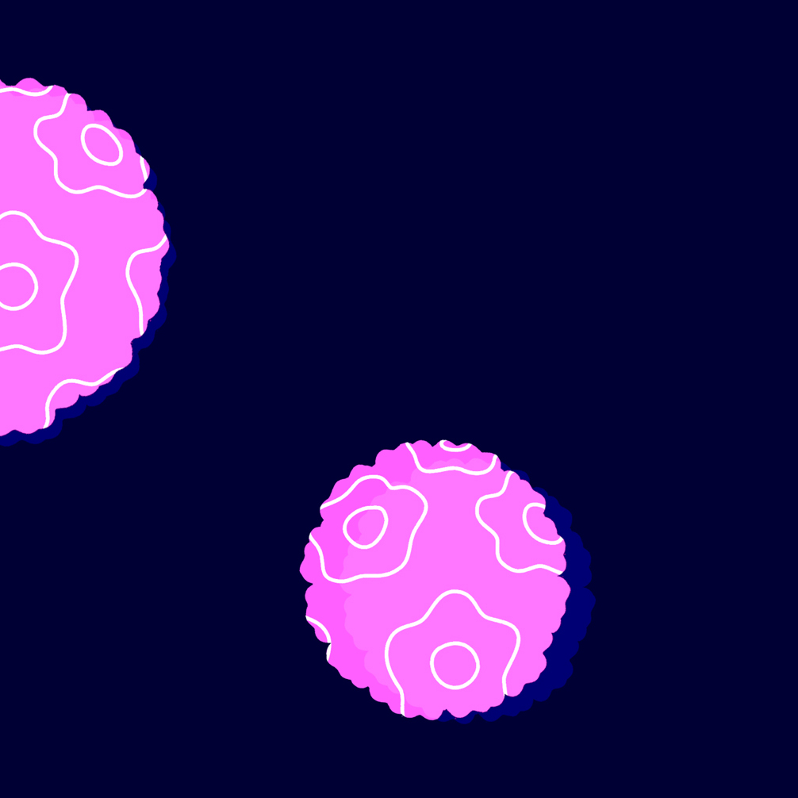

Pruebas de cribado primarias en entornos de bajos recursos
Aunque el coste de una prueba de citología es esencialmente bajo, mantener un programa basado en la citología requiere un gran volumen de personal capacitado, así como del cribado y re-cribado frecuente de la población diana, lo cual es complejo y costoso. En consecuencia, la introducción de programas basados en citología en países con recursos limitados ha fracasado, provocando una cobertura inadecuada y un rendimiento deficiente de las pruebas.
Para superar algunos de estos problemas, la OMS recomienda usar métodos de detección basados en el VPH en lugar de la citología o la inspección visual con ácido acético (IVAA).
Existe un consenso generalizado de que la prueba del VPH es superior a la citología como prueba de cribado primaria. Sin embargo, existen varios desafíos para una implementación más generalizada:
Costes de pruebas y equipos.
Infraestructura de laboratorio.
Opción(es) de pruebas rápidas o point-of-care. En muchas regiones, la falta de mecanismos de seguridad hace que las mujeres con un resultado positivo no vuelvan para la realización de más pruebas, el diagnóstico o el tratamiento, en caso necesario. Por todo ello, son muy recomendables las pruebas que facilitan las estrategias de cribado y tratamiento en el mismo día (pruebas de tratamiento inmediato o point-of-care).
Necesidad de opciones de triaje (debido a la baja especificidad). Muchas de las pruebas de triaje utilizadas en los países de renta alta son demasiado costosas, necesitan ser centralizadas para su procesamiento o no se pueden utilizar para el tratamiento inmediato.
La OMS ha incluido las pruebas del VPH en su lista de dispositivos médicos prioritarios para el manejo del cáncer. Para garantizar que se adquieran y distribuyan productos de buena calidad, los diagnósticos in vitro, como la prueba del VPH, pueden someterse a un proceso de "precalificación'' sistemático de la OMS para determinar la capacidad de un fabricante para producir un producto de calidad estable según las normas internacionales y las especificaciones de la OMS/UNFPA. Sin embargo, solo hubo unas pocas pruebas que los fabricantes solicitaron para someterse al proceso, y a finales del 2020 solo se precalificaron tres [35]WHO | Public reports of WHO prequalified IVDs (HPV virological technologies) [Internet]. WHO [cited 2021 Feb 3].:
1
CareHPV test kit
(Qiagen, China en colaboración con CARE Inc, EE. UU.)
Desarrollado por CARE (Cooperative for Assistance and Relief Everywhere, Inc.) para regiones con recursos limitados, fabricado y comercializado por Qiagen GmbH. La prueba detecta 14 tipos de VPH de alto riesgo y requiere alrededor de 2,5 horas de tiempo de procesamiento. Para esta prueba, se necesita un técnico de laboratorio capacitado, ya que se requieren varios pasos de procesado manual para el procesamiento por lotes utilizando placas de 96 pocillos.
La prueba es una adaptación de la HC2. No requiere agua corriente, aire acondicionado o una compleja infraestructura de laboratorio. El proceso es relativamente fácil de aprender (aunque se han notificado experiencias inconsistentes) y el coste esperado es de alrededor de 5-7 euros.
Sin embargo, no es una prueba apta para el tratamiento inmediato, y se deben analizar un mínimo de 9 muestras por lote para un procesamiento óptimo. En algunos estudios, se ha notificado un porcentaje considerable de placas no válidas debido a errores técnicos, cortes de energía o mal funcionamiento del sistema de prueba. Ocasionalmente se ha observado contaminación de pocillo a pocillo.
EEl careHPV cuenta con certificación CE desde el 2010 y recibió la precalificación de la OMS en el 2018. El careHPV se ha estado usando en diferentes países y regiones de China, Centroamérica, Burkina Faso o Sudáfrica.
En estudios anteriores se ha notificado hasta un 30% de resultados falsos positivos en la prueba HC2 para los tipos de VPH seleccionados (es decir, sin presencia real de tipos de VPH de alto riesgo) [36]Sargent A, Bailey A, Almonte M, Turner A, Thomson C, Peto J, et al. Prevalence of type-specific HPV infection by age and grade of cervical cytology: data from the ARTISTIC trial. Br J Cancer 2008.,[37]Gillio-Tos A, De Marco L, Carozzi FM, Del Mistro A, Girlando S, Burroni E, et al. Clinical impact of the analytical specificity of the hybrid capture 2 test: data from the New Technologies for Cervical Cancer (NTCC) study. J Clin Microbiol 2013.. Al ser una adaptación de la HC2, careHPV podría presentar las mismas limitaciones.
2
Xpert HPV
(Cepheid,
EE. UU.)
Se trata de una prueba basada en cartuchos ejecutada en GeneXpert: un sistema de PCR en tiempo real validado para el diagnóstico de tuberculosis, el diagnóstico de VIH, la carga viral del VIH, la carga viral del virus de la hepatitis C y otros.
La prueba se realiza en menos de una hora y puede ser ejecutada en cualquiera de las plataformas GeneXpert de Cepheid, todas las cuales requieren un suministro de electricidad fiable, y su manejo a través de un ordenador portátil o de escritorio. Detecta 14 tipos de VPH de alto riesgo, entre los cuales identifica el VPH 16 y el VPH 18/45 individualmente.
El ensayo Xpert HPV cuenta con marca CE desde el 2014 y recibió la precalificación de la OMS en el 2017.
El punto de corte para definir la positividad de la prueba se puede adaptar para aumentar la especificidad, lo cual es especialmente relevante para las mujeres VIH positivas, aunque con una pequeña reducción en la sensibilidad [38]WHO | Public reports of WHO prequalified IVDs (HPV virological technologies) [Internet]. WHO [cited 2021 Feb 3]..
A pesar de sus numerosas ventajas, la principal desventaja de la prueba es su elevado coste. También se han expresado diversas preocupaciones en cuanto a los residuos y su eliminación.
3
Abbott RealTime High Risk HPV
(Abbott GmbH & Co. KG, Alemania)
Se trata de una prueba in vitro cualitativa basada en la PCR para detectar el ADN de 14 genotipos del virus del papiloma humano (VPH) de alto riesgo en muestras clínicas: 16, 18, 31, 33, 35, 39, 45, 51, 52, 56, 58, 59, 66 y 68. La prueba identifica separadamente los genotipos 16 y 18 del VPH y al mismo tiempo detecta otros genotipos de alto riesgo a niveles de infección clínicamente relevantes. El ensayo Abbott RealTime High Risk HPV se utiliza como prueba de referencia, y ha sido implementado tanto en países de ingresos altos como bajos.
Además de la precalificación de la OMS, la prueba ha sido validada dentro del protocolo VALGENT. Sin embargo, es posible que el coste de la prueba no sea adecuado para los PIBM.
Independientemente de la prueba de VPH utilizada, existe un número considerable de mujeres con una infección por VPH que nunca progresará a cáncer de cuello uterino. Es por ello por lo que se han propuesto varias estrategias de manejo clínico para mujeres VPH positivas:

Tratar todos los casos positivos de VPH.
Aunque esta estrategia resulta en sobretratamiento, está siendo implementada en algunos países para realizar una estrategia cribado y tratamiento en el mismo día y así garantizar el cumplimiento.

Ejecutar una segunda prueba para confirmar la detección de las lesiones precancerosas (prueba de triaje).
La información del genotipo, la citología de cuello uterino y la IVAA son los métodos de cribado más frecuentemente utilizados en todo el mundo. Otras pruebas que podrían ser usadas en el futuro incluyen el manejo exclusivo de las mujeres VPH16/18 positivas, tinción dual de p16/Ki-67, la detección de oncoproteínas E6/E7, la metilación y la evaluación visual automatizada. Para obtener más información sobre las opciones de triaje, consultar el módulo 5.